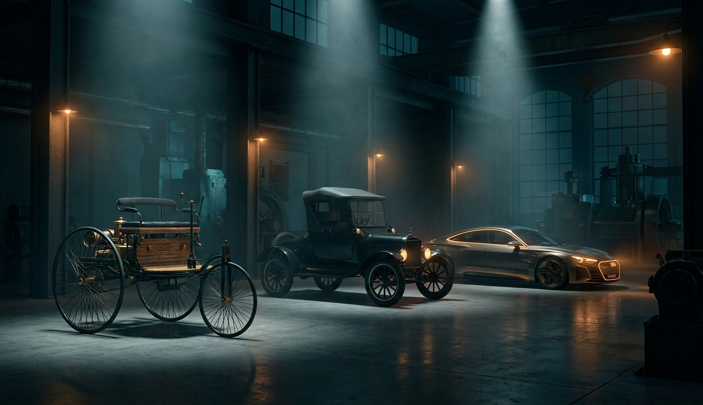
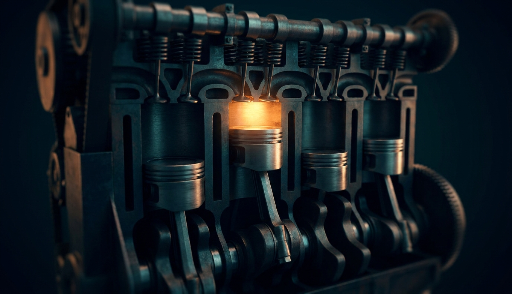
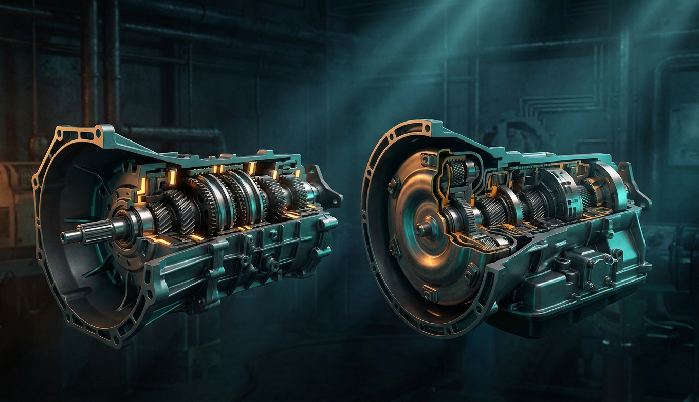
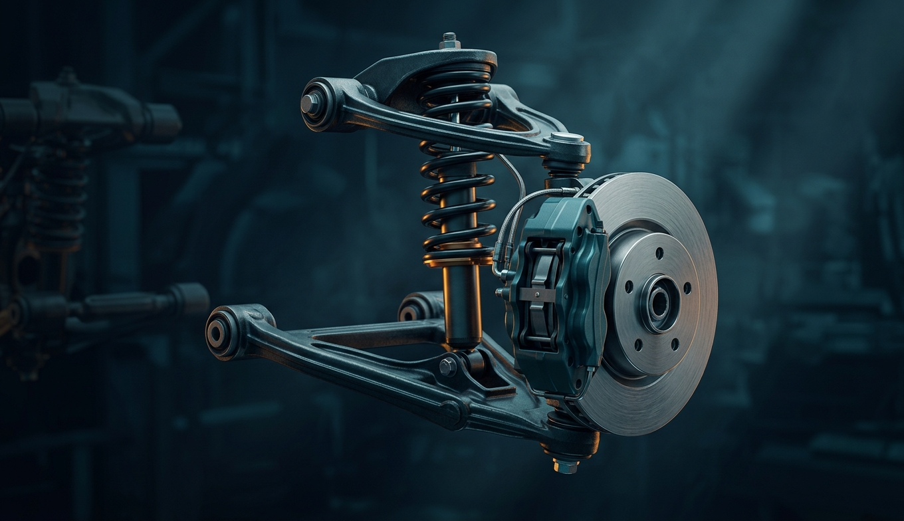
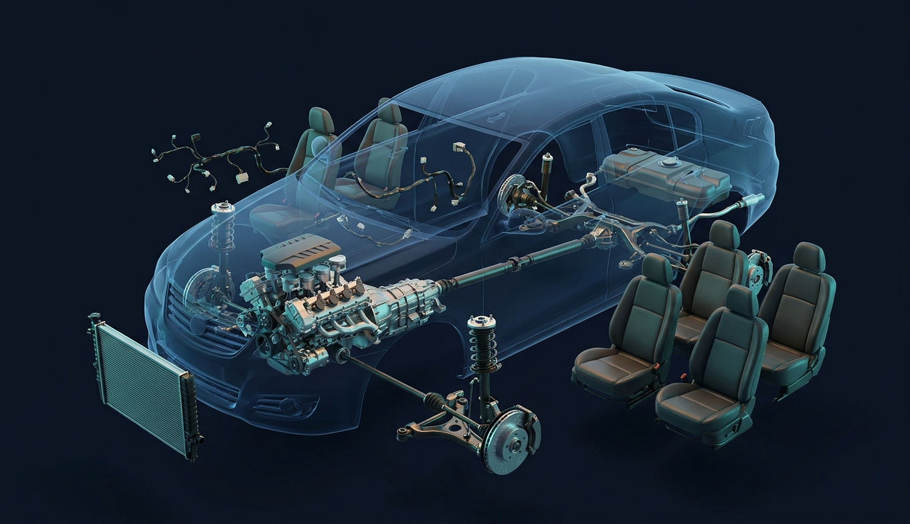
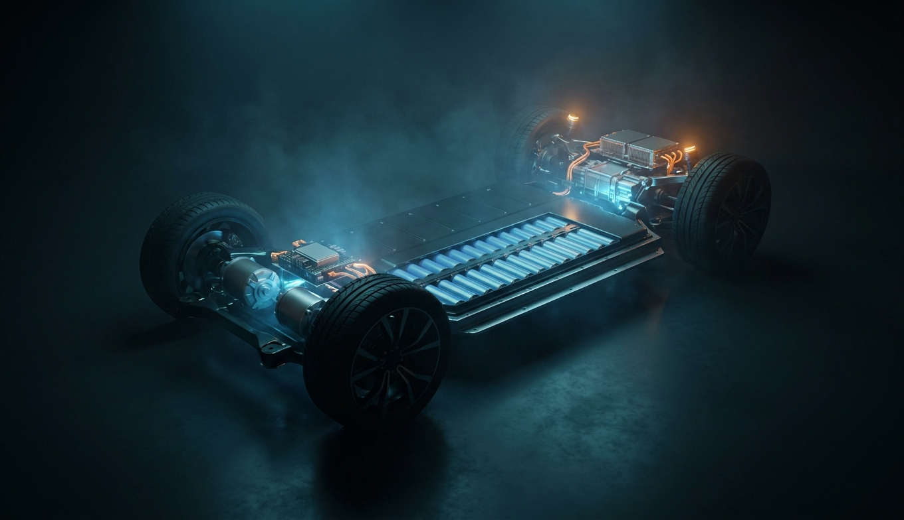
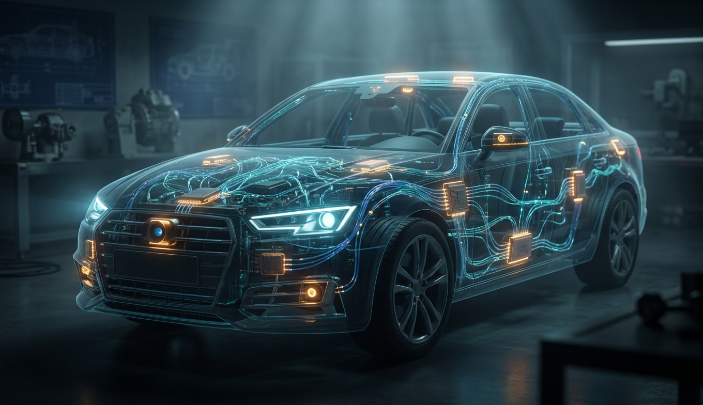
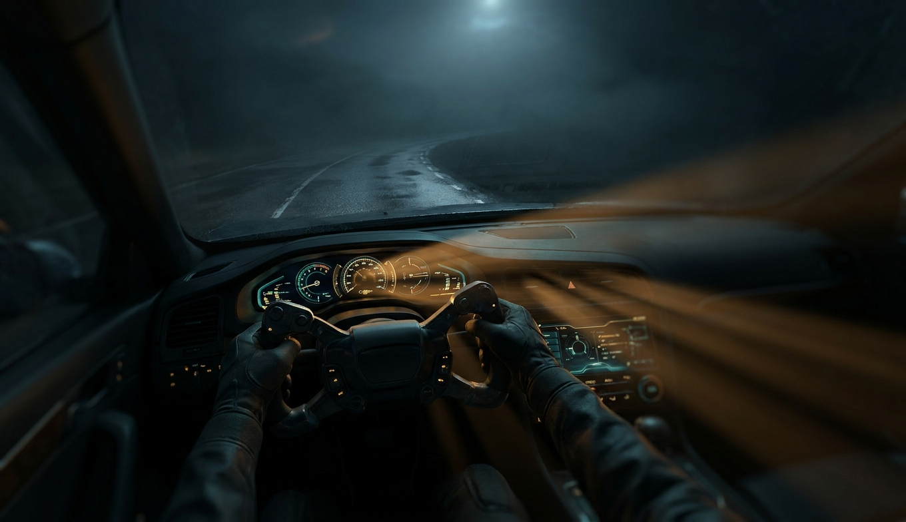

Первый автомобиль — 0.75 л.с., 16 км/ч, зажигание от батареи, которой хватало на 20 минут. Через 22 года Форд делал их по одному каждые 93 минуты. Через 140 — половина новых машин в Китае без двигателя вообще.

Поршневой ДВС — самая массовая тепловая машина в истории: два миллиарда штук. Принцип не менялся с 1876 года: сжать, поджечь, толкнуть, выбросить. Всё остальное — 150 лет борьбы за проценты.

Двигатель хорошо работает в узком окне 1500–5000 об/мин, а колёсам нужно от 0 до 1500. Коробка — переводчик между ними. Пять способов её сделать, у каждого — своя цена.

Всё, что делает машина — разгон, торможение, поворот — проходит через четыре куска резины общей площадью с лист А4. Подвеска, рулевое и тормоза существуют, чтобы эти четыре ладони не отрывались от асфальта.

Тринадцать систем, по слайду на каждую: что за деталь, зачем она, как работает и как обычно умирает. Не все 30 000 деталей — но всё, что ты услышишь от механика в сервисе.

Нет поршней, клапанов, коробки, сцепления, выхлопа, масла, ремня ГРМ. Есть батарея, инвертор, мотор и редуктор. Всё остальное — та же машина. Разбираем, почему это просто и почему всё-таки сложно.

В современной машине больше кода, чем в Boeing 787, F-35 и Facebook вместе. Полторы сотни компьютеров, три километра проводов и полсотни датчиков — и это до того, как речь зашла об автопилоте.
Что ломается, что проверять, куда идёт индустрия — и почему машина через десять лет будет ближе к смартфону, чем к тому, что стоит у тебя во дворе.

Бензин → впрыск → сжатие → искра → 80 атмосфер на поршень → коленвал → сцепление → шестерни → карданы → дифференциал → ШРУС → колесо → четыре ладони резины → асфальт. Или: батарея → инвертор → мотор → редуктор → колесо. Второй путь короче на две тысячи деталей, и это единственное, что в машине действительно изменилось за сто лет.